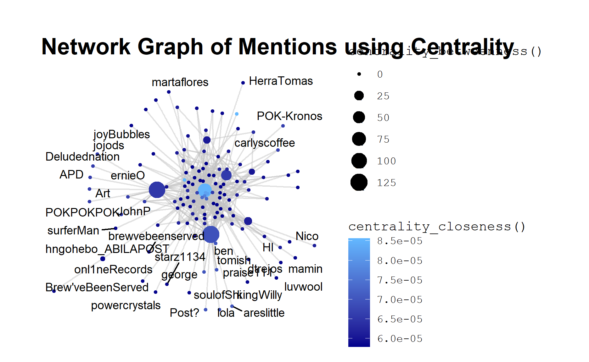

This project assumes that the user is unaware of the actual sequence of events and seeks to uncover them solely from the visualisation. Hence the methods outlined here can involve extra steps to cross check and verify if some assumptions made on the initial observations are consistent through. Since this dataset mimics an actual microblogging social network, there will be some inconsistencies in the tweets. In such cases, I had chosen to keep observations that are in line with the overall analysis and point out inconsistencies for readers to make further analysis.
A sizable number of messages in this dataset are retweets (RTs). In most microblog analysis, RTs are removed, leaving only unique messages as RTs are essentially duplicate messages that can skew the analysis. However, for this project, RTs are kept as the frequency of RT messages is an indication of how many authors are also experiencing the same situation as the RT.
Data Preparation
The data from the three csv files are first extracted and combined into one tibble dataframe for wrangling using the R tidyverse suite of packages. (You can find out more about tibble dataframe here.
Install and load all necessary packages
The following packages are loaded:
packages = c('tidyverse',
'ggplot2', #static plots
'plotly', #interactive plots
'crosstalk', #html widgets
'lubridate', #format datetime
'date', #functions for handling dates
'hms', #format time
'VIM', #visualise missing values
'patchwork', #combination plots
'tidygraph', #tidy graph manipulation
'ggraph', #graphing network
'visNetwork' #graphing interactive networks
)
for(p in packages) {
if(!require(p,character.only = T)){
install.packages(p)
}
library(p, character.only = T)
}
Import and extract relevant data
The three csv files have the same structure and column headers, read_csv is used to import and extract the relevant columns from each file into R and map_dfr is used to append the three files into a one. A new column, source, is created to append the name of the csv file that the row was extracted from.
df_list <- list.files(path = "./New/",pattern=".csv", full.names = TRUE)
comb <- df_list %>% set_names() %>% map_dfr(read_csv, .id = "source")
The datetime column is a string of digits, yyyyMMddHHmmss, gsub is used to split and insert the separators so that the string is now in the form * d/m/Y H:M:S. Next, as.Date is used to change the format to date time and to further extract the time component. as_hms from the hms package is used to convert it into a time format.
comb$datetime <- gsub("^(\\d{4})(\\d{2})(\\d{2})(\\d{2})(\\d{2})(\\d{2})$",
"\\3-\\2-\\1 \\4:\\5:\\6",
comb$`date(yyyyMMddHHmmss)`,
perl=TRUE)
comb$datetime <-strptime(comb$datetime,format = "%d-%m-%Y %H:%M:%S")
comb$date <- as.Date(comb$datetime, format = "%d/%m/%Y H:M:S")
comb$time <- format(as.POSIXct(comb$datetime,format="%d-%m-%Y %H:%M:%S"),"%H:%M:%S")
comb$time <- as_hms(comb$time)
The data frame is converted to a tibble using as_tibble. As the records are from a microblog which can contain some special characters, all columns of the character type converted to UTF-8.
comb <- as_tibble(comb) %>% mutate_if(is.character, function(col) iconv(col, to="UTF-8"))
The filenames in source are quite long, so they are renamed as Part1, Part2 and Part3 respectively. I also renamed message to text for better comprehension.
comb1 <- comb %>% select(-`date(yyyyMMddHHmmss)`)%>%
dplyr::rename(Text = message) %>%
mutate(source = recode(source,
`./New/csv-1700-1830.csv`="Part1",
`./New/csv-1831-2000.csv`="Part2",
`./New/csv-2001-2131.csv`="Part3" ))
Create a new row to detect if the message is a RT by using str_detect and regular expression pattern.
comb1 <- comb1 %>%
mutate(is_RT = case_when(str_detect(Text, "^RT @") ~ "True", TRUE ~ "False"))
Use glimpse to view the columns of the dataset and check that the data type is correct.
glimpse(comb1)
Rows: 4,063
Columns: 11
$ source <chr> "Part1", "Part1", "Part1", "Part1", "Part1", "Part~
$ type <chr> "mbdata", "mbdata", "mbdata", "mbdata", "mbdata", ~
$ author <chr> "POK", "maha_Homeland", "Viktor-E", "KronosStar", ~
$ Text <chr> "Follow us @POK-Kronos", "Don't miss a moment! Fo~
$ latitude <dbl> NA, NA, NA, NA, NA, NA, NA, NA, NA, NA, NA, NA, NA~
$ longitude <dbl> NA, NA, NA, NA, NA, NA, NA, NA, NA, NA, NA, NA, NA~
$ location <chr> NA, NA, NA, NA, NA, NA, NA, NA, NA, "Egeou St / Pa~
$ datetime <dttm> 2014-01-23 17:00:00, 2014-01-23 17:00:00, 2014-01~
$ date <date> 2014-01-23, 2014-01-23, 2014-01-23, 2014-01-23, 2~
$ time <time> 17:00:00, 17:00:00, 17:00:00, 17:00:00, 17:00:00,~
$ is_RT <chr> "False", "False", "False", "False", "False", "Fals~source, type, author, Text, location and is_RT are of the character type as required, while datetime is of the datetime type, date is of the date type, time is of the time type and latitude and longitude are number strings denoted by dbl as required.
Create a stacked bar chart using ggplot to view the distribution of data type by source.
comb1 %>% group_by(source) %>%
count(type) %>%
ungroup() %>%
ggplot(aes(x= source, y =n, fill = as.factor(type))) +
geom_col() +
labs(title = "Distribution of data type by source file",
x = "Source file",
y = "Number of records", fill= "Type") +
geom_text(aes(label = n), size = 3, position = position_stack(vjust = 0.5))
There are much fewer ccdata compared to mbdata.
Creating Visualizations to Explore the data
The VIM package provides a function that gives us a visualisation of the missing values.
aggr(comb1,plot = TRUE,bars=TRUE)
As documented in the source, author, latitude and longitude are unavailable for all ccdata. location is unavailable for all mbdata while latitude and longitude are unavailable for most of the mbdata.
Grouped Bar Chart by Author
None of the tweets are missing so I will proceed to group the mbdata by author to find the number tweets made by each author that evening. I will also create columns to count the number of mentions made by the author and the number of hashtags used.
plotly is used to create an interactive graph to explore the relationship between the authors and the metrics. The coloured legend at the upper right-hand side allows users to click and filter the chart base on the metric they want to view. plotly also allows users to zoom in to view specific sections of the dataset in greater detail. A tooltip is activated upon hover so that the user can see all the metrics for that author.
p <- comb2 %>%
plot_ly(x=~author, y=~no_of_tweets,
type ='bar',
name = 'Number of Tweets',
hoverinfo = 'text',
text = ~paste(author, "</br></br>Tweets: ",
no_of_tweets, "</br>Hashtags: ",
hashtags, "</br>Mentions: ",
mentions,"</br>Retweets: ", retweets)) %>%
add_trace(y =~hashtags, name = 'Number of Hashtags') %>%
add_trace(y =~mentions, name = 'Number of Mentions') %>%
add_trace(y =~retweets, name = 'Number of Retweets') %>%
layout(title = "Text Metrics by Author",
yaxis = list(title = 'Count'),
barmode = 'group')
p
Filtering for only Number of Tweets and Number of Hashtags by clicking on the legend, we see that there are two authors, KronosQuoth and Clevvah4Evah, who had posted huge number of tweets and hashtags. Clevvah4Evah sent an average of 4.7 tweets per minute with an average of 2 hashtags per text message. While Clevvah4Evah sent an average of 0.6 tweets per minute with an average of 3 hashtags per text message. From tooltip, we find that these two authors do not have any mentions or RTs, hence they look very suspicious and further exploration will be done to check if they are indeed authors posting authentic text or just spam bots.
comb1 %>% filter(author == "KronosQuoth") %>% select(Text)
# A tibble: 1,265 x 1
Text
<chr>
1 Success is walking from failure to failure with no loss of enthusi~
2 A person who never made a mistake never tried anything new. #Kron~
3 The only person you are destined to become is the person you decid~
4 Knowledge is being aware of what you can do. Wisdom is knowing whe~
5 The meaning of life is to find your gift. The purpose of life is t~
6 If you're going through hell keep going. #POKRally #HI
7 You miss 100% of the shots you dont take. #KronosStar #POKRally
8 You may only succeed if you desire succeeding; you may only fail i~
9 I didnt fail the test. I just found 100 ways to do it wrong. #Kro~
10 To accomplish great things, we must not only act, but also dream, ~
# ... with 1,255 more rowsTweets by KronosQuoth are composed of pseudo-sayings with several duplicated messages. They are mostly appended with #POKRally and #HI but the content is unrelated to the rally.
comb1 %>% filter(author == "Clevvah4Evah") %>% select(Text)
# A tibble: 153 x 1
Text
<chr>
1 I want a job 80% mental 30% fiscal #POK #Rally #Grammar
2 Youre the penultimate girlfriend! #POK #Rally #Grammar
3 You got low self coincidence #POK #Rally #Grammar
4 I would like to return the complement #POK #Rally #Grammar
5 GAStech said they would give me a bonus! #POK #Rally #Grammar
6 GAStech said they would give me a bonus! #POK #Rally #Grammar
7 What's the diff between would of and would've? #POK #Rally #Grammar
8 The rally has peaked my interest! #POK #Rally #Grammar
9 You got low self coincidence #POK #Rally #Grammar
10 Dont loose your way in the dark going home #POK #Rally #Grammar
# ... with 143 more rowsTweets by Clevvah4Evah are random statements that also contains several duplicated messages. They are mostly appended with #POK , #Rally and #Grammar but once again, the content is unrelated to the rally. We will drop these two authors from subsequent analysis as they are not meaningful.
Mentions Network Graph
Even though we have removed 1418 records by filtering away KronosQuoth and Clevvah4Evah, the dataset is still too large to read all the entries in detail. I choose to use RTs and mentions as a blunt filter for the important messages because important messages are more likely to be echoed as a mention or RT by other users in the social network.
In our graph network, the edges will point away from the source author. For example rrWine posted the following message RT @AbilaPost POK rally set to take place in Abila City Park . AbilaPost is the source of the message hence a link will point away from AbilaPost to rrWine in the network. The number of out going links shows how many messages by the source author has been retweeted and will be used as the weight.
To prepare the dataframe, I extracted all the mentions from each tweet using str_extract_all and a regular expression pattern. Next, unnest will convert the mentions into a row of its own. group_by and add_tally counts the number of mentions by the same author, which will be used as the weights.
comb1_mentions2 <- comb1 %>%
mutate(mentions = str_extract_all(Text, "@\\S+")) %>%
unnest(mentions)%>%
group_by(mentions) %>%
add_tally() %>%
ungroup() %>%
arrange(time)
comb1_mentions3 <- comb1_mentions2 %>%
mutate(mentions = str_remove(mentions, "^\\@"))
For the node set, I extracted the set of unique authors from the author column and the set of unique author from the mentions. visNetwork requires the nodes labels to be named as label, so rename author as label. Use full_join to obtain all the unique authors from both sets.
author_unique <- comb1_mentions3 %>%
select(author) %>%
distinct(author) %>%
rename(label = author)
mentions_unique <- comb1_mentions3 %>%
select(mentions) %>%
distinct(mentions) %>%
rename(label = mentions)
nodes <- full_join(author_unique, mentions_unique, by = "label") %>%
arrange(label)
The next part of the code appends an id to each node for the creation of the edge set.
Here, I also included the code to create the groups found from my exploration of the network. I will include the colour coding in the rendered graph so that it is easier to see the different author groups. How these groups are found will be discussed shortly with the visualisation below.
nodes <- nodes %>%
rowid_to_column("id") %>%
mutate(group = if_else(label == "AbilaPost" |
label == "KronosStar" |
label == "CentralBulletin" |
label == "InternationalNews"|
label == "NewsOnlineToday", "news",
if_else(label == "AbilaFireDept" |
label =="AbilaPoliceDepartment",
"official" ,
if_else(label == "truccotrucco"|
label == "megaMan"|
label == "ben" |
label == "Simon_Hamaeth"|
label == "sofitees" |
label == "hngohebo_ABILAPOST" |
label=="HomelandIlluminations",
"interest",
"others")
)
)
)
Next, I create the edge set by using select to extract the required columns. Each edge is created from mentions to author and Text is included so that it can be displayed in tooltip later.
edge <- comb1_mentions3 %>% select(author, mentions, Text)
Obtain the id of the from and to nodes using left_join with the node set.
Use add_tally to obtain the degree of each mention node to be used as the weight.
edges <- select(edges, from, to,title) %>%
group_by(from) %>%
add_tally() %>%
ungroup()
Add the weight, n, to the node set.
nodes <- nodes %>%
left_join(select(edges, n, from), by = c("id" = "from")) %>%
distinct(id, label, group, n) %>%
rename(value = n)
Two common measures of the importance of a node in a network is the degree centrality and betweenness centrality. The strength is defined as the sum of the weights of all edges incident to a node. We calculate node strengths by passing the argument weights to centrality_degree(). Since our network is directed, we will use the out-strength as our measure of degree centrality.
Betweenness centrality quantifies the number of times a node acts as a bridge along the shortest path between two other nodes. There are only 8 nodes with a betweenness score that is greater than zero.
Both degree centrality and betweenness centrality will be found using the tidygraph package. Visualising the top 10 authors for each measure using a bar chart created using the ggplot package.
mentions_graph <- tbl_graph(nodes = nodes, edges = edges, directed = TRUE)
mentions_graph %>%
activate(edges) %>%
arrange(desc(n))
# A tbl_graph: 132 nodes and 1084 edges
#
# A directed multigraph with 1 component
#
# Edge Data: 1,084 x 4 (active)
from to title n
<int> <int> <chr> <int>
1 47 55 RT @HomelandIlluminations Reports coming in of a~ 183
2 47 74 RT @HomelandIlluminations Reports coming in of a~ 183
3 47 63 RT @HomelandIlluminations Reports coming in of a~ 183
4 47 29 RT @HomelandIlluminations Reports coming in of a~ 183
5 47 87 RT @HomelandIlluminations Reports coming in of a~ 183
6 47 130 RT @HomelandIlluminations Reports coming in of a~ 183
# ... with 1,078 more rows
#
# Node Data: 132 x 4
id label group value
<int> <chr> <chr> <int>
1 1 AbilaAllFaith others 5
2 2 AbilaFireDept official 5
3 3 AbilaPoliceDepartment official 6
# ... with 129 more rowsg <- mentions_graph %>%
activate(nodes) %>%
mutate(
in_strength = centrality_degree(weights = n, mode = "in"),
out_strength = centrality_degree(weights = n, mode = "out"),
strength = centrality_degree(weights = n, mode = "all")) %>%
as_tibble()
gp <- g %>%
arrange(desc(out_strength)) %>%
top_n(10,out_strength) %>%
mutate(label = fct_reorder(label, out_strength)) %>%
ggplot(aes(x = label,y = out_strength, fill = label)) +
coord_flip() +
geom_col(show.legend = FALSE) +
labs(title= "Centrality degree of Authors by Out Strength",
x = "Authors", y = "Out Strength")
g1 <- mentions_graph %>%
activate(nodes) %>%
mutate(betw = centrality_betweenness()) %>%
arrange(desc(betw)) %>%
as_tibble()
gp1 <- g1 %>%
slice_head(n = 8) %>%
mutate(label = fct_reorder(label, betw)) %>%
ggplot(aes(x = label,y = betw, fill = label)) +
coord_flip() +
geom_col(show.legend = FALSE) +
labs(title= "Betweeenness Centrality of Authors",
x = "Authors", y = "Betweenness Centrality")
gp + gp1
There are some overlaps in the nodes identified by the centrality measures and we will take a closer look at them using a network graph.
The ggraph package allows me to use the centrality_closeness as the colour and centrality_betweenness as the size in the network. The resulting static graph shows that there is a node with high closeness and betweenness centrality, however it is difficult to identify it as the graph is too cluttered.
g2 <-
ggraph(mentions_graph, layout = "nicely") +
geom_edge_link(edge_colour = "gray77", alpha = 0.5) +
geom_node_point(aes(colour = centrality_closeness(), size=centrality_betweenness())) +
theme_graph() + scale_colour_gradient(low = "#00008B", high = "#63B8FF") +
geom_node_text(aes(label = label,size=25), repel = TRUE) +
ggtitle("Network Graph of Mentions using Centrality") + theme(text=element_text(family="mono"))
g2

I will use an interactive network graph of authors to visualise the mentions and RTs to overcome the issues in a static graph. The interactivity will allow me to visualise and identify important nodes in the network and tooltip will be used to display the text message so that I do not need to filter the data table for it. I will also use the network to further investigate the top authors identified by the centrality measures.
legend_nodes <- data.frame(label = unique(nodes$group))
visNetwork(nodes, edges,
main = "Network of Mentions",
height = "500px",
width = "100%") %>%
visEdges(arrows = "top")%>%
visIgraphLayout(layout = "layout_as_star")%>%
visInteraction(dragNodes = TRUE,
dragView = TRUE,
zoomView = TRUE,
multiselect = TRUE,
navigationButtons = TRUE,
tooltipStyle = 'position: fixed;visibility:hidden;padding: 5px;white-space: wrap;
font-family: cursive;font-size:12px;font-color:purple;background-color: blue;') %>%
visNodes( labelHighlightBold = TRUE, font = list(size=30), shape="box") %>%
visOptions(highlightNearest = list(enabled = TRUE,
hover = FALSE,
algorithm ="hierarchical"),
nodesIdSelection = list(enabled = TRUE,
main = "Mentioned"),
selectedBy = list(variable="group", main="Type")) %>%
visLegend(width=0.2, position="right", zoom=FALSE, useGroups = TRUE)
The visNetwork package allows users to build interactive network visualisations. It was selected for its capabilities in handling large number of nodes by it visPhysics layout function, and also its intuitive highlighting and drag functions when analysing the graph.
When creating the network and testing the layout options, I found that visPhysics produces the best layout as the nodes are spaced apart with no overlaps and it is easy to see the nodes with the most edges. However, the network graph is too large for the graph to stabilise, ie. in the visualisation the network will not stop trembling. Running this option is also computationally taxing and graph will be slow to render. Hence, I will only show the screenshots of the network produced by visPhysics function and use the visIgraphLayout option in the code chunk below. The code chunk for the visPhysics function will be included in the appendix if the reader is keen to try it out another time.

From the network graph, I first locate the nodes identified with high degree centrality scores. By hovering on their links to read some of their tweets, I discovered the outgoing links of the top nodes are retweets of informative news reports. Hence, I grouped AbilaPost, KronosStar, CentralBulletin, InternationalNews, NewsOnlineToday as news.

Other authors with high degree centrality are HomelandIlluminations, megaMan, truccotrucco and ben. HomelandIlluminations is a very informative source, giving updates about a fire at Dancing Dolphin and the evacuation of residents. Furthermore, a possible hit-and-run, police stand-off, SWAT team and hostage scene were also mentioned.

From their tweets, we learn that megaManand ben knows each other, and they are passing information about a situation involving a black van and the police. Their most retweeted message was @ben ITS THE SECOND VAN GUY!. Examining the content of megaMan and truccotrucco reveals that they were both tweeting about a standoff between a black van and the police outside gelatogalore, with megaMan being a close observer of the black van and truccotrucco inside gelatogalore when the standoff was taking place.

Other nodes with high degree centrality or betweenness scores are FriendsOfKronos, POK and * Choconibbs. They were all mainly tweeting about the POK Rally, with POK* giving updates and supporting the rally and FriendsOfKronos and * Choconibbs* criticising and dismissive of the rally. Tweets from trollingsnark were mainly criticisms or disparaging remarks. As his messages were not meaningful, we will exclude them for further analysis.
Finally, hngohebo_ABILAPOST posted one text message and retweeted another. Both tweets were about a hit and run involving a bicyclist near Schaber.

After exploring the network graphs, the nodes were grouped as follows:
News: AbilaPost, KronosStar,CentralBulletin, InternationalNews, NewsOnlineToday
Official: AbilaFireDept, AbilaPoliceDepartment
Interest: truccotrucco, megaMan, ben, Simon_Hamaeth, sofitees, hngohebo_ABILAPOST, HomelandIlluminations
Others: the rest
It is interesting to note that Viktor-E was the only author who mentioned himself. Also since regular expression was used to extract the authors in the mentions, a message with a missing space caused dancingdolphin?#AbilaPost to be recorded as a different author from the actual dancingdolphin. The error was easy to spot as the nodes were arranged alphabetically.
Dot Plot of RTs and Mentions
After identifying key authors of information, I used an interactive dot plot to visualise their tweets in chronological order to understand how the events mentioned unfolded over the evening. Using plotly and the crosstalk package, allows users to filter for specific authors for different time periods.
I used the previously cleaned dataset of mentions and RTs as the highlight_key so that mentions will be a filter option. Next, some checkboxes and select filters were created to allow users to select the timeframe, author, and is_RT.
tx <- highlight_key(comb1_mentions2)
widgets <- bscols(
widths = c(3, 6, 3),
filter_checkbox("source", "Time Period", tx, ~source, inline = TRUE),
filter_select("mentions","Mentions",tx,~mentions),
filter_checkbox("RT", "RT", tx, ~is_RT, inline = TRUE)
)
plot_ly is used to create the graph and bscols is used to specify the layout of the filter widgets and the plots.
bscols(widths =c(12,12),
widgets,
plot_ly(tx, x = ~time, y=~n,
showlegend = FALSE,
color = ~factor(mentions) ,
hoverinfo ='text',
text=~paste(Text, "</br></br>By ",
author, " at ",
time),
width = 900, height =600)%>%
layout(title = "RT and Mentions Through the Evening",
xaxis = list(title = "Time",
rangeslider = list(bgcolor = "#f0f8ff" ,
type = "time"),
categoryarray = ~time,
categoryorder='array'),
yaxis = list(title = "Number of Mentions"),
autosize=T) %>%
add_markers()
)
Filtering for all the news groups and HomelandIlluminations, laid out the events of the evening in chronological order.
For example, HomelandIlluminations was the first to report the fire at Achilleos & Madeg. Later that evening, KronosStar described an erratic driver who ran a red light at around the same time that HomelandIlluminations reported a hit and run. KronosStar subsequently reported that the driver was being cornered by the police in a parking lot near Alexandrias and Ithakis and later shots were fired. This led to APD units sent to the shooting area. And later AbilaPost reported that the stand off ends peacefully.